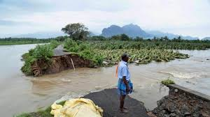

The heavy monsoon rains left a trail of destruction with several cities, districts, and villages in Kerala submerging under flood waters.
Damage to human lives and property: More than 70 people have lost their lives in the rain-related incidents so far and still counting. An immense damage to about Rs. 8, 316 crore worth of property has been caused in the incessant monsoon rains. Nearly 60,000 people who became homeless due to floods were shifted to more than 2,000 relief camps. Massive damage to the roads, houses, and other infrastructure occurred in the northern districts of the state because of the avalanches caused by persistent rain showers. 211 incidents of flash floods and landslides have been reported in Kerala in which about 324 people have lost their lives and several others injured.
Dams opened, adding more to floods: Kerala has so far opened the gates of 35 of its 39 dams including the stream gates of the Idukki dam inundating the habitations on the riverside. All the five gates of the Idukki dam were opened for the time emphasizing just how grievous situations are in Kerala. Tensions intensified between the states of Kerala and Tamil Nadu after the Tamil Nadu government opened the gates of the Mullaperiyar dam to release the surplus water from the reservoir. This made the situation of Kerala even more worse taking the state more underwater.
Public transportation facilities in Kerala at halt: >The facilities at the Cochin International Airport in Kerala have been deferred due to excessive flooding around the airport atleast till 26th August. The flight operations have been shifted to the Thiruvananthapuram and Calicut civil airports.There is a disruption in the train services and the road transport in the state is in shambles as the roads have gone underwater. The public transportation facilities of Kochi Metro and the Southern Railways have also been drastically affected, putting their services to a halt in central Kerala due to floods. The authorities of Kochi Metro Rail Limited (KMRL) stalled operations as its yards are flooded with water. Their services will only resume once the water recedes from the yards and the systems return to working condition.

Government initiatives: Several government agencies like the Natural Disaster Management Authority, Indian Meteorological Department, the Army, the Navy, Central Water Commission, and the Home Ministry and Defense Ministry have been enrolled to execute one of the massive flood evacuation, rescue, and relief operations in Kerala. The Central government has also declared a financial assistance of Rs. 100 crore to the people residing in the flood-prone Kerala. Neighbouring states, Tamil Nadu and Karnataka have also contributed their lot to Kerala. The government of Kerala has cancelled the celebrations of Onam this year and will be utilizing the funds raised for the celebrations towards relief work.
 >
>
Despite being one of the prosperous and developed states of the country, Kerala is facing the most hazardous floods recently. After achieving so much on the social and economic frontier, where is it lacking behind? Who to blame-The monsoon rains or the human activities
High rate of deforestation: Deforestation and changing land patterns in Kerala is a contributing factor to floods. The districts of Wayanad and Idukki are counted as the most heavily covered with dense forest. However, the forest cover in these districts has witnessed a steady decline between 2011 and 2017. This made these regions highly susceptible to flash flooding.
Lack of flood forecasting system in Kerala: Kerala state lacks any proper flood forecasting system despite being prone to heavy rains and floods. India’s only flood forecasting agency, Central Water Commission (CWC), lacked any information regarding the flood conditions in Kerala. This makes the situation more worse as the locals do not have any scope to prepare for the situation before hand. The CWC has set up flood monitoring sites in the state, but some of them are not functional.
Untimely release of surplus water from the dams: When the state of Kerala was already dealing with a severe flood situation, more than two dozen dams released massive amount of water, worsening the situation even more. Why the water was not released before? What were the authorities doing before monsoons arrived in India? These questions hovers over everyone’s mind when we think of districts like Malappuram, Kannur, Idukki, Ernakulam, Kozhikode, Wayanad, and Palakkad in Kerala, which are facing the catastrophic floods and have also witnessed loss of human lives from flash floods and landslips.
The current situation in Kerala demands resilient planning by the government. A beginning should be made with the relocation of the people away from the risk zones residing along the riversides which got flooded with water after the gates of about two dozen dams were opened in the past few weeks. Finding an appropriate land is, of course, a big task in a populated, forested Kerala, but it is a definite need to get ready for the future. Efficient medical facilities are necessary in Kerala to deal with the epidemics during floods. This year’s striking disaster stresses on the role of the government as an insurer and a last alternative for an average citizen.
The application focus on SMS for information delivery for disasters and other service notices. Reaching out through Facebook, Twitter and email using the Signal application, the company prompted their customers to opt in to receive SMS updates.